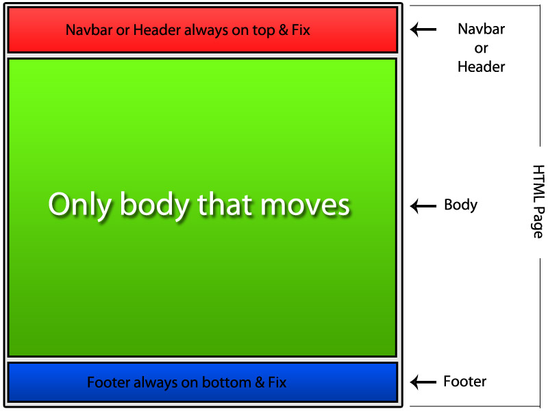

Section
 El elemento de HTML section representa una sección genérica de un documento. Sirve para determinar qué contenido corresponde a qué parte de un esquema. Piensa en el esquema como en el índice de contenido de un libro; un tema común y subsecciones relacionadas. Es, por lo tanto, una etiquéta semántica. Su funcionalidad principal es estructurar semánticamente un documento a la hora de ser representado por parte de un agente usuario. Por ejemplo, un agente de usuario que represente el documento en voz, podría exponer al usuario el índice de contenido por niveles para navegar rápidamente por las distintas partes section. (s. f.). developer.mozilla.org. Recuperado 16 de octubre de 2020, de https://developer.mozilla.org/es/docs/Web/HTML/Elemento/section.
El elemento de HTML section representa una sección genérica de un documento. Sirve para determinar qué contenido corresponde a qué parte de un esquema. Piensa en el esquema como en el índice de contenido de un libro; un tema común y subsecciones relacionadas. Es, por lo tanto, una etiquéta semántica. Su funcionalidad principal es estructurar semánticamente un documento a la hora de ser representado por parte de un agente usuario. Por ejemplo, un agente de usuario que represente el documento en voz, podría exponer al usuario el índice de contenido por niveles para navegar rápidamente por las distintas partes section. (s. f.). developer.mozilla.org. Recuperado 16 de octubre de 2020, de https://developer.mozilla.org/es/docs/Web/HTML/Elemento/section.
Aside
 El elemento aside es un contenedor para información que se considera solo levemente relacionada al documento o la sección en la que es definida. En otras palabras, el contenido del elemento aside debe estar relacionado al contenido circundante, pero no ser completamente necesario para su comprensión. Aside (s. f.). https://www.htmlquick.com/. Recuperado 16 de octubre de 2020, de https://www.htmlquick.com/es/reference/tags/aside.html.
El elemento aside es un contenedor para información que se considera solo levemente relacionada al documento o la sección en la que es definida. En otras palabras, el contenido del elemento aside debe estar relacionado al contenido circundante, pero no ser completamente necesario para su comprensión. Aside (s. f.). https://www.htmlquick.com/. Recuperado 16 de octubre de 2020, de https://www.htmlquick.com/es/reference/tags/aside.html.
Footer
El Elemento HTML Footer (footer) representa un pie de página para el contenido de sección más cercano o el elemento raíz de sección (p.e, su ancestro mas cercano article, aside, nav, section,blockquote, body, details, fieldset, figure, td). Un pie de página típicamente contiene información acerca de el autor de la sección, datos de derechos de autor o enlaces a documentos relacionados Footer. (s. f.). https://developer.mozilla.org/. Recuperado 16 de octubre de 2020, de https://developer.mozilla.org/es/docs/Web/HTML/Elemento/footer.
Article
 El Elemento article de HTML article representa una composición auto-contenida en un documento, página, una aplicación o en el sitio, que se destina a distribuir de forma independiente o reutilizable, por ejemplo, en la indicación. Podría ser un mensaje en un foro, un artículo de una revista o un periódico, una entrada de blog, un comentario de un usuario, un widget interactivo o gadget, o cualquier otro elemento independiente del contenidoarticle (s. f.). developer.mozilla.org. Recuperado 16 de octubre de 2020, de https://developer.mozilla.org/es/docs/Web/HTML/Elemento/article.
El Elemento article de HTML article representa una composición auto-contenida en un documento, página, una aplicación o en el sitio, que se destina a distribuir de forma independiente o reutilizable, por ejemplo, en la indicación. Podría ser un mensaje en un foro, un artículo de una revista o un periódico, una entrada de blog, un comentario de un usuario, un widget interactivo o gadget, o cualquier otro elemento independiente del contenidoarticle (s. f.). developer.mozilla.org. Recuperado 16 de octubre de 2020, de https://developer.mozilla.org/es/docs/Web/HTML/Elemento/article.